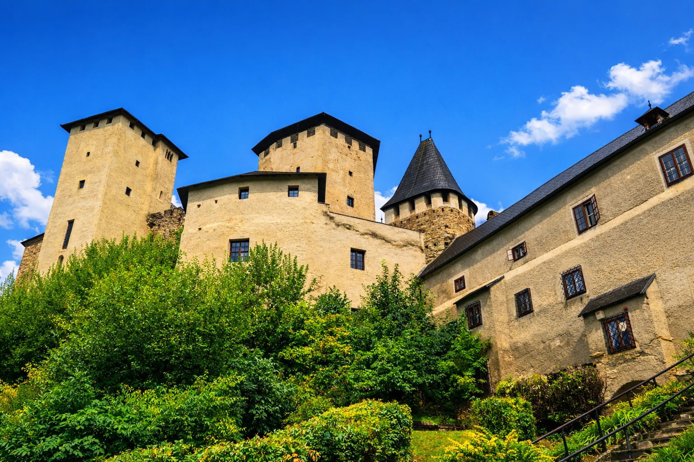

2. Léka vára (Burg Lockenhaus)
47.40702687332012, 16.423533709481177

Léka vára (Lockenhaus) a Günsz völgye fölé emelkedik, és Burgenland egyik leginkább középkori jellegű erőssége. A várat kb. 1200 körül építették, korai neve Leuca volt.
1270 után a Güssingi grófok birtoka lett, majd a 14. és 17. század között gyakran cserélt gazdát. 1636-ban Franz Nádasdy alatt jelentősen bővítették, ekkor készült el az alsó, külső vár rész is.
1676-ban az Esterházy hercegekhez került. A 20. században romossá vált, majd 1968-ban Margaret és Paul Anton Keller megvásárolta, és alapítványi formában indult el a hosszú helyreállítás. A kezelők beszámolója szerint a felújításokra azóta mintegy 22 millió eurót fordítottak.
A látogatás ma tematikus kiállításokra épül, a helyi hagyomány a templomos lovagokat és Báthory Erzsébet alakját is a várhoz kapcsolja. A vár az Írottkő, Geschriebenstein Natúrpark erdős vidékén áll, és tavasszal, kora nyáron denevérkolóniák is megfigyelhetők a környékén.